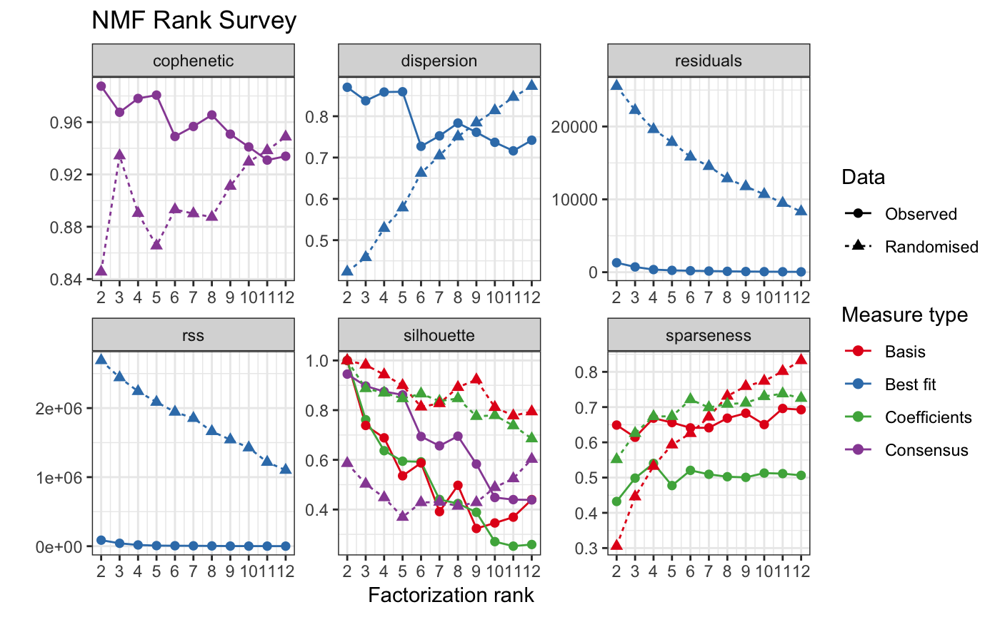
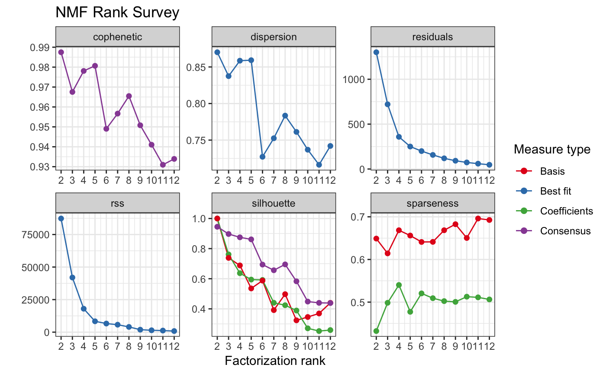
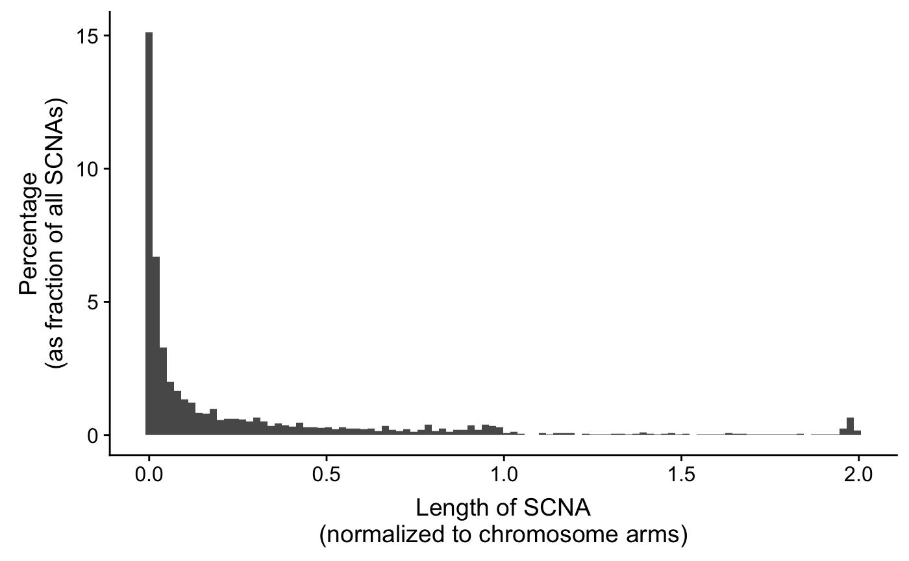
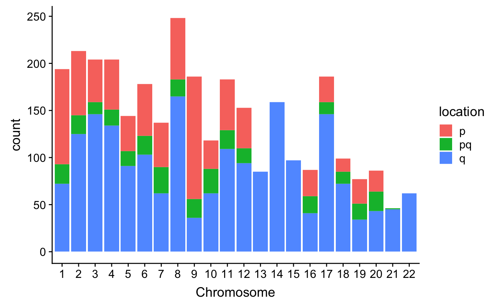
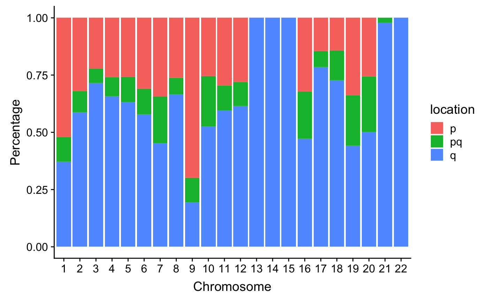

VSHunter: Decode Pattern of Copy Number Profile
Shixiang Wang ShanghaiTech. University
2018-12-12
Source:vignettes/VSHunter.Rmd
VSHunter.RmdThe goal of VSHunter is to capture variation signature from genomic data. For now, we decode copy number pattern from absolute copy number profile. This package collects R code from paper Copy number signatures and mutational processes in ovarian carcinoma and tidy them as a open source R package for bioinformatics community.
Before you use this tool, you have to obtain absolute copy number profile for samples via software like ABSOLUTE v2, QDNASeq etc..
Procedure
- summarise copy-number profile using a number of different feature distributions:
- Sgement size
- Breakpoint number (per ten megabases)
- change-point copy-number
- Breakpoint number (per chromosome arm)
- Length of segments with oscillating copy-number
- apply mixture modelling to breakdown each feature distribution into mixtures of Gaussian or mixtures of Poisson distributions using the flexmix package.
- generate a sample-by-component matrix representing the sum of posterior probabilities of each copy-number event being assigned to each component.
- use NMF package to factorise the sample-by-component matrix into a signature-by-sample matrix and component-by signature-matrix.

Copy number signature identification, Macintyre, Geoff, et al.(2018)
Installation
You can install UCSCXenaTools from github with:
# install.packages("devtools")
devtools::install_github("ShixiangWang/VSHunter", build_vignettes = TRUE)Load package.
Usage
Load example data:
tcga_segTabs is a list contain absolute copy number profile for multiple samples, each sample is a data.frame in the list.
Obtain CNV summary info.
tcga_frac = cnv_getLengthFraction(tcga_segTabs)
#> Warning in cnv_getLengthFraction(tcga_segTabs): '23' is not a supported
#> chromosome, related rows will be discarded.Derive feature distributions
tcga_features = cnv_derivefeatures(CN_data = tcga_segTabs, cores = 1, genome_build = "hg19")
#> Warning in getBPnum(CN_data, chrlen): '23' is not a supported chromosome,
#> related rows will be discarded.
#> Warning in getOscilation(CN_data): '23' is not a supported chromosome,
#> related rows will be discarded.
#> Warning in getCentromereDistCounts(CN_data, centromeres, chrlen): '23' is
#> not a supported chromosome, related rows will be discarded.Generate a sample-by-component matrix
Generate a sample-by-component matrix representing the sum of posterior probabilities of each copy-number event being assigned to each component.
Choose optimal number of signatures.
tcga_sig_choose = cnv_chooseSigNumber(tcga_sample_component_matrix, nrun = 10, cores = 4)
#> Estimating best rank..
#> Compute NMF rank= 2 ... + measures ... OK
#> Compute NMF rank= 3 ... + measures ... OK
#> Compute NMF rank= 4 ... + measures ... OK
#> Compute NMF rank= 5 ... + measures ... OK
#> Compute NMF rank= 6 ... + measures ... OK
#> Compute NMF rank= 7 ... + measures ... OK
#> Compute NMF rank= 8 ... + measures ... OK
#> Compute NMF rank= 9 ... + measures ... OK
#> Compute NMF rank= 10 ... + measures ... OK
#> Compute NMF rank= 11 ... + measures ... OK
#> Compute NMF rank= 12 ... + measures ... OK
#> method seed rng metric rank sparseness.basis sparseness.coef
#> 2 brunet random 1 KL 2 0.6489683 0.4322189
#> 3 brunet random 2 KL 3 0.6142799 0.4984319
#> 4 brunet random 3 KL 4 0.6685100 0.5401982
#> 5 brunet random 4 KL 5 0.6560764 0.4773139
#> 6 brunet random 4 KL 6 0.6410512 0.5204883
#> 7 brunet random 4 KL 7 0.6412633 0.5092596
#> 8 brunet random 4 KL 8 0.6685275 0.5023854
#> 9 brunet random 4 KL 9 0.6826431 0.5006178
#> 10 brunet random 5 KL 10 0.6504016 0.5127575
#> 11 brunet random 1 KL 11 0.6960388 0.5112119
#> 12 brunet random 4 KL 12 0.6925852 0.5062999
#> rss evar silhouette.coef silhouette.basis residuals niter
#> 2 87298.8567 0.9772809 1.0000000 1.0000000 1300.82840 440
#> 3 41968.6019 0.9890779 0.7614656 0.7384315 720.76085 1180
#> 4 17990.1148 0.9953182 0.6367657 0.6885032 358.50895 790
#> 5 8344.3822 0.9978284 0.5944109 0.5356420 250.30470 850
#> 6 6609.5339 0.9982799 0.5919581 0.5875211 199.66517 1540
#> 7 5730.2758 0.9985087 0.4404151 0.3916044 157.08709 730
#> 8 4019.4472 0.9989540 0.4240787 0.4974423 119.07745 1340
#> 9 1902.8989 0.9995048 0.3888588 0.3237052 92.29312 2000
#> 10 1451.7440 0.9996222 0.2707051 0.3458225 73.22050 1500
#> 11 1222.0242 0.9996820 0.2525762 0.3692754 59.61798 2000
#> 12 848.6553 0.9997791 0.2591439 0.4399106 47.14418 2000
#> cpu cpu.all nrun cophenetic dispersion silhouette.consensus
#> 2 0.099 3.906 10 0.9874746 0.8701313 0.9450441
#> 3 0.206 3.116 10 0.9675288 0.8374649 0.8970294
#> 4 0.087 3.077 10 0.9780816 0.8585785 0.8750204
#> 5 0.149 3.177 10 0.9806623 0.8592666 0.8614892
#> 6 0.281 3.185 10 0.9490230 0.7271888 0.6938755
#> 7 0.157 3.084 10 0.9566635 0.7525396 0.6563727
#> 8 0.279 3.107 10 0.9654777 0.7834676 0.6952167
#> 9 0.400 3.142 10 0.9507996 0.7611951 0.5829273
#> 10 0.307 3.114 10 0.9410231 0.7368583 0.4483320
#> 11 0.454 3.111 10 0.9309618 0.7162517 0.4398692
#> 12 0.449 3.078 10 0.9339152 0.7420009 0.4386445
#> Using 3 as a best-fit rank based on decreasing cophenetic correlation coefficient.
#> Generating random matrix and run NMF...
#> Compute NMF rank= 2 ... + measures ... OK
#> Compute NMF rank= 3 ... + measures ... OK
#> Compute NMF rank= 4 ... + measures ... OK
#> Compute NMF rank= 5 ... + measures ... OK
#> Compute NMF rank= 6 ... + measures ... OK
#> Compute NMF rank= 7 ... + measures ... OK
#> Compute NMF rank= 8 ... + measures ... OK
#> Compute NMF rank= 9 ... + measures ... OK
#> Compute NMF rank= 10 ... + measures ... OK
#> Compute NMF rank= 11 ... + measures ... OK
#> Compute NMF rank= 12 ... + measures ... OK
#> Creating nmf rank survey plot...
Do not test a randomise data (save time).
tcga_sig_choose2 = cnv_chooseSigNumber(tcga_sample_component_matrix, nrun = 10, cores = 4, testRandom = FALSE)
#> Estimating best rank..
#> Compute NMF rank= 2 ... + measures ... OK
#> Compute NMF rank= 3 ... + measures ... OK
#> Compute NMF rank= 4 ... + measures ... OK
#> Compute NMF rank= 5 ... + measures ... OK
#> Compute NMF rank= 6 ... + measures ... OK
#> Compute NMF rank= 7 ... + measures ... OK
#> Compute NMF rank= 8 ... + measures ... OK
#> Compute NMF rank= 9 ... + measures ... OK
#> Compute NMF rank= 10 ... + measures ... OK
#> Compute NMF rank= 11 ... + measures ... OK
#> Compute NMF rank= 12 ... + measures ... OK
#> method seed rng metric rank sparseness.basis sparseness.coef
#> 2 brunet random 1 KL 2 0.6489683 0.4322189
#> 3 brunet random 2 KL 3 0.6142799 0.4984319
#> 4 brunet random 3 KL 4 0.6685100 0.5401982
#> 5 brunet random 4 KL 5 0.6560764 0.4773139
#> 6 brunet random 4 KL 6 0.6410512 0.5204883
#> 7 brunet random 4 KL 7 0.6412633 0.5092596
#> 8 brunet random 4 KL 8 0.6685275 0.5023854
#> 9 brunet random 4 KL 9 0.6826431 0.5006178
#> 10 brunet random 5 KL 10 0.6504016 0.5127575
#> 11 brunet random 1 KL 11 0.6960388 0.5112119
#> 12 brunet random 4 KL 12 0.6925852 0.5062999
#> rss evar silhouette.coef silhouette.basis residuals niter
#> 2 87298.8567 0.9772809 1.0000000 1.0000000 1300.82840 440
#> 3 41968.6019 0.9890779 0.7614656 0.7384315 720.76085 1180
#> 4 17990.1148 0.9953182 0.6367657 0.6885032 358.50895 790
#> 5 8344.3822 0.9978284 0.5944109 0.5356420 250.30470 850
#> 6 6609.5339 0.9982799 0.5919581 0.5875211 199.66517 1540
#> 7 5730.2758 0.9985087 0.4404151 0.3916044 157.08709 730
#> 8 4019.4472 0.9989540 0.4240787 0.4974423 119.07745 1340
#> 9 1902.8989 0.9995048 0.3888588 0.3237052 92.29312 2000
#> 10 1451.7440 0.9996222 0.2707051 0.3458225 73.22050 1500
#> 11 1222.0242 0.9996820 0.2525762 0.3692754 59.61798 2000
#> 12 848.6553 0.9997791 0.2591439 0.4399106 47.14418 2000
#> cpu cpu.all nrun cophenetic dispersion silhouette.consensus
#> 2 0.112 3.081 10 0.9874746 0.8701313 0.9450441
#> 3 0.204 3.161 10 0.9675288 0.8374649 0.8970294
#> 4 0.090 3.206 10 0.9780816 0.8585785 0.8750204
#> 5 0.171 3.176 10 0.9806623 0.8592666 0.8614892
#> 6 0.296 3.143 10 0.9490230 0.7271888 0.6938755
#> 7 0.174 3.120 10 0.9566635 0.7525396 0.6563727
#> 8 0.252 3.135 10 0.9654777 0.7834676 0.6952167
#> 9 0.393 3.121 10 0.9507996 0.7611951 0.5829273
#> 10 0.344 3.067 10 0.9410231 0.7368583 0.4483320
#> 11 0.429 3.123 10 0.9309618 0.7162517 0.4398692
#> 12 0.459 3.192 10 0.9339152 0.7420009 0.4386445
#> Using 3 as a best-fit rank based on decreasing cophenetic correlation coefficient.
#> Creating nmf rank survey plot...
Extract signatures
tcga_signatures = cnv_extractSignatures(tcga_sample_component_matrix, nsig = 3, cores = 4)
#> Running NMF based on specified rank...
#> NMF algorithm: 'brunet'
#> Multiple runs: 1000
#> Mode: parallel (4/8 core(s))
#>
Runs: |
Runs: | | 0%
Runs: |
Runs: |==================================================| 100%
#> System time:
#> 用户 系统 流逝
#> 3.049 0.249 295.557Auto-capture signatures
Function cnv_autoCaptureSignatures() finish three steps (choose best number of signatures, extract signatures and quantify exposure) above in an antomated way. The arguments of this function are same as cnv_chooseSigNumber().
The result object is a list which contains all results need fro downstream analysis, include NMF result related to best rank value, signature matrix, absolute and relative exposure (contribution) and best rank survey etc..
CNV signature calling pipeline
This feature is implemented in cnv_pipe() function.
Visualization
Visualize CNV distribution by normalized CN length or chromosome.



Plot functions:
Citation
- Macintyre, Geoff, et al. “Copy number signatures and mutational processes in ovarian carcinoma.” Nature genetics 50.9 (2018): 1262.
If you wanna thank my work for this package, you can also cite (and inlucde link of this package - https://github.com/ShixiangWang/VSHunter):
- Wang, Shixiang, et al. “APOBEC3B and APOBEC mutational signature as potential predictive markers for immunotherapy response in non-small cell lung cancer.” Oncogene (2018).